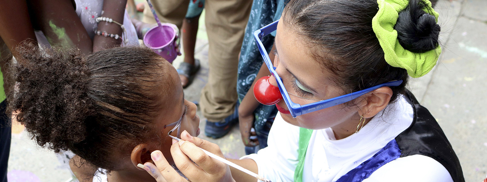
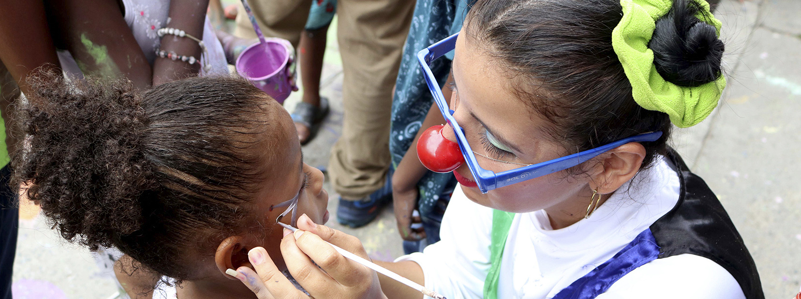

Misión
Aportar a la comprensión de la violencia y sus dinámicas en Santiago de Cali, realizando análisis continuos y detallados sobre la situación delincuencial de la ciudad a través de la generación primaria de información en el Comité Interinstitucional de Muertes Externas y trabajo cualitativo en campo, y secundaria por medio de la articulación con otros organismos de seguridad.
Visión
En el año 2025 el Observatorio de Seguridad será reconocido como el principal centro de monitoreo y evaluación de políticas públicas de seguridad en el suroccidente colombiano, brindando información delincuencial confiable, constante y objetiva.
Objetivos
- Proporcionar información de manera periódica y confiable a la comunidad caleña sobre el comportamiento delincuencial en Santiago de Cali, en los componentes de: delitos contra la vida, delitos contra la propiedad y narcóticos.
- Generar información primaria de las muertes por causa externa a través del Comité Interinstitucional de Muertes Externas.
- Articular a la comunidad a través de trabajo cualitativo y participación ciudadana para identificar los factores situacionales que propician la comisión del delito.

Cali segura
Por una ciudad segura para nuestros niños

Cali incluyente
La ciudad más incluyente y accesible para la infancia y sus familias
Cali deportiva
Capital deportiva de América
Cali para todos
Oficialmente Distrito Especial, Deportivo, Cultural y Turístico